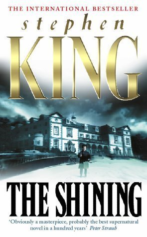
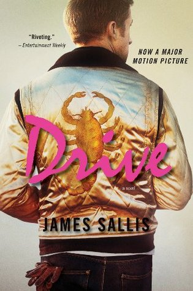

Is The Movie Better Than The Book?
8 December 2021

The Shining

The book:
Stephen King’s more logophilic tendencies are in full force with this approximately 500
page novel. Telling the story of a family torn asunder both by mental illness and otherworldly forces (the
latter as a metaphor for the former), King explores a harrowing world of psychic turmoil and childhood
trauma. It’s an impactful novel for sure, but King’s penchant for going into insanely specific detail with
regards to minor characters and irrelevant subplots makes it sometimes a boring and tedious read.
The movie:
Kubrick’s ominous vision of the Overlook Hotel is stunningly designed, gorgeously shot,
and impeccably acted. The film is widely believed to be one of the greatest examples of modern cinema ever
produced. The director’s menacing creation of an oppressive, spectral atmosphere is somewhat unparalleled in
the history of horror. It’s probably as close to a perfect movie as anything can get.
Key differences: King gives a lot more depth to Jack and Danny Torrence in the book than we’re given in the
movie, and the world of the novel is more filled out and developed. King famously hated the movie for
simplifying his story into something more visually than emotionally complex. The end is a bit different too:
in the book, Jack is ultimately defeated by the Overlook’s sentient topiary, in the movie he freezes to
death. Is the magical aspect of the novel meant to be taken at face value or is it a metaphor for internal
strife? Depends who you ask.
Final verdict:
The movie is better. Despite King’s hatred of the film, the movie actually handles
the source material better than King could do himself, especially considering his own disastrous attempt at
adapting the text into a miniseries almost two decades later. Kubrick’s version does lack some of the
psychological insights of the book, but it cuts through the excesses of King’s novel to produce something
far sleeker and more impactful.
Drive

The book:
James Sallis’ novel is a minimalist, existential crime drama about a nameless getaway
driver. The short tale is filled with gorgeously world weary prose and lines like: “Time went by, which is
what time does, what it is.” The stark world of the book is painted in broad strokes and the characters are
sort of Sartre-influenced shadow people more so than fully three-dimensional characters.
The movie:
Nicholas Winding Refn takes up the existential themes of the novel in a sort of
roundabout way, choosing to depict the characters in sleek fashions and neon-drenched lighting while they
speak in short, pithy sentences. Critics complained the movie was all style and no substance, but a quickly
growing faction of Refn-cultists countered that style is substance. Either way: whether you like the
minimalist dialogue and understated acting, it’s hard to deny the impact of the film’s impossibly earworm-y
soundtrack and gorgeous cinematography.
Key differences:
We get a little bit more information on the background characters in the book, but
Sallis’s original text certainly leaves a lot to the imagination, in the sense that these characters
represent existential ideas rather than actual tangible people. The implications of Driver’s actions are
also seen in the novel’s 2011 sequel, which changes a lot about the ways the events of the first book can be
viewed — but none of that is present in the movie.
Final verdict:
Both are great. The movie is excellent if you like lush visuals and cool music, the
novel is excellent if you want something a bit more cerebral. If you’re easily irritated by Ryan Gosling’s
non-acting and ultra-violence, maybe skip the movie. If sparse, philosophical crime fables aren’t for you,
skip the book.